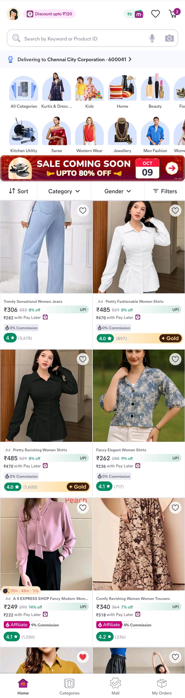

07 · Evidence
What the current Meesho experience already does well.
Before designing anything new, I wanted to understand the existing shopping journey. I used two current Meesho screens as the baseline: the product listing page and the product detail page.

Current PLP · DiscoveryCategories, offers, filters, product cards, price, ratings and marketplace signals are already part of the browsing experience.

Current PDP · Product decisionSize, seller, product details, similar products, ratings, customer photos, delivery and purchase actions are already available.
The audit changed my framing. The problem wasn't that Meesho had no useful information. It was that the shopping experience could do more to connect that information around the decisions a shopper is actually trying to make.
What this evidence tells me: the concept should build on the existing product experience rather than pretend that trust, reviews, delivery or seller information are missing.